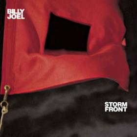

Billy Joel is an American musician and composer. He is the sixth best-selling recording artist in the U.S. and is known for writing songs with historical context that touch on Stalingrad, the assassination of John F. Kennedy and the COld War, among others.In 2013, Joel received the Kennedy Center Honors, the nation's highest honor for influencing American culture through the arts.
To hear a few of his songs, click on the album cover below.
All photos are obtained from Billy Joel's official website.
"We Didn't Start the Fire" by Billy Joel

"For the Longest Time" by Billy Joel
"Piano Man" by Billy Joel
"Pressure" by Billy Joel